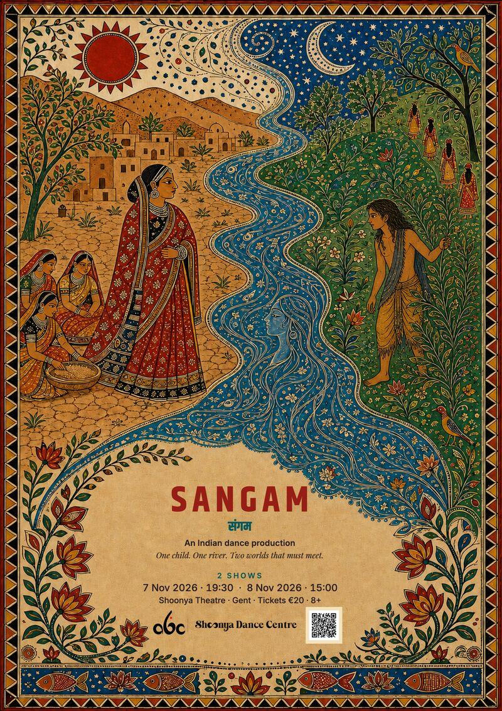
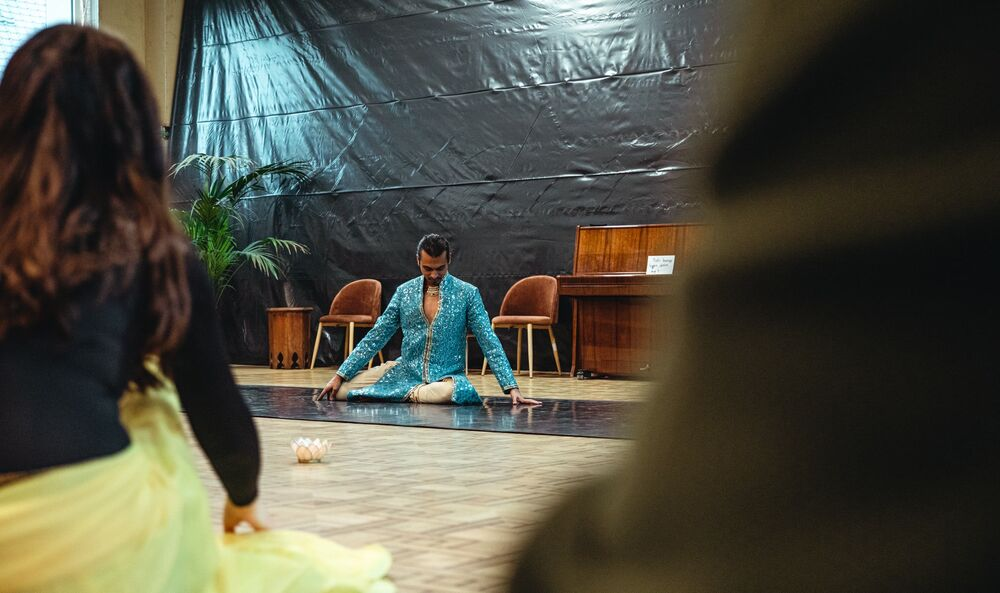
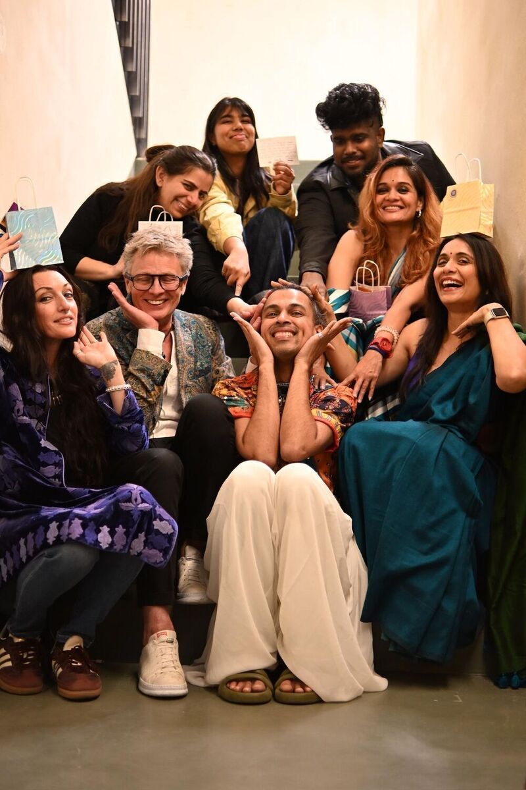
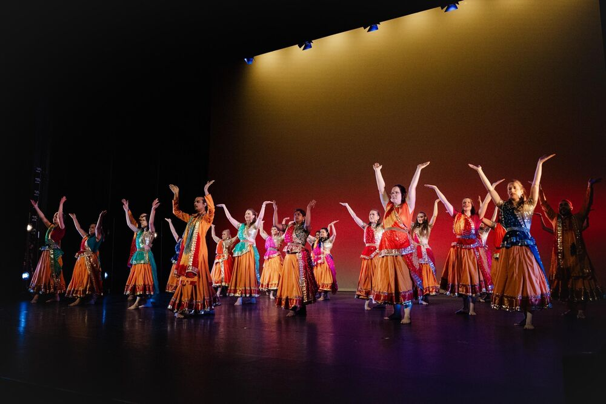

Sat 7 Nov 2026 · 19:30–21:00
SANGAM · Saturday
Performance at Shoonya Theatre. 70 minutes plus a 20-minute interval. Tickets €20, ages 8+.
Your year with Swapnil · Shoonya, Ghent
Classes. Workshops. Together on stage.
Gentse Feesten · Photo: Stijn DejonckheereTap an event for details and calendar downloads.

Performance at Shoonya Theatre. 70 minutes plus a 20-minute interval. Tickets €20, ages 8+.
Performance at Shoonya Theatre. 70 minutes plus a 20-minute interval. Tickets €20, ages 8+.
All Swapnil students together at Shoonya. Final class before Swapnil’s December teaching break.

Five sessions over three days.
Save all five sessionsIndian Dance Winter Intensive 2027 with Swapnil. Check the event page for booking and practical details.
Indian Dance Winter Intensive 2027 with Swapnil. Check the event page for booking and practical details.
Indian Dance Winter Intensive 2027 with Swapnil. Check the event page for booking and practical details.
Indian Dance Winter Intensive 2027 with Swapnil. Check the event page for booking and practical details.
Indian Dance Winter Intensive 2027 with Swapnil. Check the event page for booking and practical details.
Spring free trial week. Try classes from the published weekly timetable.
Both Bhangra and Indian Semi-Classical run on these four Wednesdays. Class times and registration details will follow.
Save both Starter SeriesBoth series · Times TBC
Save this dateBoth series · Times TBC
Save this dateBoth series · Times TBC
Save this dateBoth series · Times TBC
Save this date
Three days of Indian dance. Programme and session times to follow.

Only for students performing in SANGAM. Shoonya Dance Centre, Stapelplein 41, Gent. This rehearsal is not for the whole class.
Only for students performing in SANGAM. Shoonya Dance Centre, Stapelplein 41, Gent. This rehearsal is not for the whole class.
Only for students performing at NTGent. Keep Friday evening free for the full technical rehearsal at Shoonya. Times to follow.
For your regular weekly class, follow your own timetable. Open days and trial weeks are school-wide.
See the weekly timetable ↗Shoonya Dance Centre
Stapelplein 41, 9000 Gent
Open an .ics file in Apple Calendar, Google Calendar or Outlook. The full-year download includes both semester windows, holidays and all listed events, including rehearsals marked for participating performers only. It does not include every weekly class.
If you import the full year, you do not also need the individual files. Imports are snapshots, not automatic subscriptions. Dates without a time are saved as reminders and do not block the whole day. All times shown are local to Ghent.